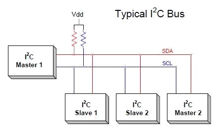

Communication Protocols
I2C
I2C is a synchronous serial communication protocol that is commonly used in embedded systems. On MRover we often use I2C to interface with sensors. I2C has a single leader device and multiple follower devices (traditionally master and slave devices). An example of this is the science board being the leader and multiple sensors being the followers. The leader device controls the clock and initiates communication, while the followers respond when addressed. Each I2C device has a unique 7-bit address allowing for multiple devices to be placed on the same bus.
I2C uses two wires, a clock line (SCL) and a data line (SDA). Both lines are open-drain and require pull-up resistors, meaning devices are only able to pull the line low and not drive it high, preventing possible damage. Below is a diagram of a sample I2C bus setup.

How Communication Works
Each transaction between the leader and a follower begins with a start condition and ends with a stop condition.
- Start Condition: occurs when the leader pulls SDA low while SCL is held high.
- Stop Condition: occurs when the leader releases SDA high while SCL is held high.
After a start condition the leader sends a message over the bus consisting of:
- 7-bit address of follower
- Read/Write bit (0 = write, 1 = read)
- ACK bit (the addressed follower pulls SDA low to acknowledge its address was received)
Then the actual data transfer begins, sending byte-by-byte with each byte followed by an ACK/NACK bit. After all data is sent the leader sends the stop condition and the bus waits for another transaction.
CAN
Controller Area Network (CAN) is a communication protocol that is used in many embedded systems, especially in industrial and automotive contexts where reliability is important. Devices speak to each other on a CAN bus, which is composed of two wires: CAN High (CANH) and CAN Low (CANL). CAN is a serial, multimaster, multicast protocol, which means that when the bus is free, any node can send a message (multimaster), and all nodes may receive and act on the message (multicast).
The CAN protocol has evolved over time. It has three versions, introduced in chronological order:
- CAN 2.0A
- CAN 2.0B
- CAN FD
Each version adds more features to the protocol while maintaining backwards compatibility.
There are four types of CAN messages, or “frames:” the Data Frame, Remote Frame, Error Frame and Overload Frame. The data frame is the standard CAN message, broadcasting data from the transmitter to the other nodes on the bus. A remote frame is broadcast by a transmitter to request data from a specific node. An error frame may be transmitted by any node that detects a bus error. Overload frames are used to introduce additional delay between data or remote frames.
The data frame is the most common frame type and is what this guide will cover. The data frame is made up of two important parts: the identifier and the data. The identifier can be used to determine the priority of the message. The lower the identifier, the higher the priority of the message. Furthermore, the identifier can be used to determine the source of the message, the destination of the message, or the type of message being sent. The data is the actual information being sent by the transmitter to the other nodes on the bus. The length of the identifier and data can vary depending on the version of CAN being used.
There are many other fields in the data frame, but for the purposes of this guide, we will only cover the identifier and data. Refer to this document for a more in-depth look at the CAN protocol.
CAN 2.0
CAN 2.0A is the original version of the CAN protocol. It supports an identifier up to 11 bits and data packets up to 8 bytes in length.
CAN 2.0B is an extension of CAN 2.0A. It supports an identifier of either 11 bits or 29 bits and data packets up to 8 bytes in length. The 29-bit identifier allows for more unique identifiers to be used on the bus.
All CAN 2.0 messages can be sent at a maximum rate of 1 Mbps.
CAN FD
CAN FD is the latest version of the CAN protocol. It supports an identifier of either 11 bits or 29 bits and data packets up to 64 bytes in length. The FD stands for Flexible Data-rate, which means that the data can be sent at a different rate than the rest of the message. This allows for a maximum data rate of 8 Mbps (although 5 Mbps is a more practical limit). The other parts of the message are sent at a maximum rate of 1 Mbps. The rate in which data is sent is often called the "data rate," while the rate in which the rest of the message is sent is called the "nominal rate."
As a side note, although CAN FD can send up to 64 bytes of data in a single message, this does not mean that the data payload of the message can be any value up to 64 bytes. The data payload can be the following lengths: 0 to 8, 12, 16, 20, 24, 32, 48, or 64.
CAN Bit Timing
When using CAN, you will need to configure the bit timing. The bit timing determines how fast we send and receive messages on the CAN bus. The bit timing parameters are:
- Prescaler
- Sync Jump Width
- Time Seg 1
- Time Seg 2
For CAN FD, data can be sent at a different rate than the rest of the message. So we end up with two different sets of bit timing parameters:
- Nominal Prescaler
- Nominal Sync Jump Width
- Nominal Time Seg 1
- Nominal Time Seg 2
- Data Prescaler
- Data Sync Jump Width
- Data Time Seg 1
- Data Time Seg 2
For an in-depth guide on what these values mean, this video, although long, is very informative.
CAN Bus
As mentioned previously, the CAN bus is made up of two wires: CAN High (CANH) and CAN Low (CANL). Microcontrollers, however, do not have the capability to directly interface with the CAN bus. They require a CAN transceiver to convert the digital signals from the microcontroller to the analog signals on the CAN bus. The CAN transceiver also provides protection to the microcontroller from the high voltage on the CAN bus. This is why you will often see CAN TX and RX pins on a microcontroller, but no CANH or CANL pins. The TX and RX pins are connected to the CAN transceiver, which then connects to the CAN bus.
Additionally, the CANH and CANL wires are connected to each other at the beginning and end of the bus. This is called termination. The termination is usually done with a 120Ω resistor at each end of the bus. Termination is important because it helps to reduce reflections on the bus, which can cause data errors.
Using the Kvaser Bit Timing Calculator
We will go over finding these values for STM32 MCUs using an online tool provided by Kvaser. However, the process is similar for other microcontrollers and CAN hardware.
The tool requires three values that are properties of the hardware you are using:
- Clock Frequency
- Clock Tolerance
- Node Delay
The clock frequency of the FDCAN peripheral is based on the system clock. It can
be found and modified by the user in the Clock Configuration tab of the .ioc in STM32CubeIDE.
The example below shows a clock configuration where the FDCAN peripheral clock frequency is 64 MHz.

The clock tolerance (measured in ppm) is a physical characteristic of the clock of the CAN FD hardware. Based on the specific clock configuration shown above, we can see that the FDCAN peripheral is using PCLK1 (FDCAN Clock Mux). PCLK1 is based on PLLCLK (System Clock Mux). Finally, PLLCLK is based on HSI16 (PLL Source Mux). We can find the characteristics in the datasheet. The table with the characteristics of the HSI16 oscillator for the STM32G431 is shown below.
We then perform the following calculation:
(16.08 - 16) / 16 = 0.005
For these values, we can use an online tool provided by Kvaser.
The tool requires three values that are properties of the hardware you are using:
- Clock Frequency
- Clock Tolerance
- Node Delay
We will go over finding these values for STM32 MCUs.
The clock frequency of the FDCAN peripheral is based on the system clock. It can
be found and modified by the user in the Clock Configuration tab of the .ioc in STM32CubeIDE.
The example below shows a clock configuration where the FDCAN peripheral clock frequency is 64 MHz.
The clock tolerance (measured in ppm) is a physical characteristic of the clock of the CAN FD hardware. Based on the specific clock configuration shown above, we can see that the FDCAN peripheral is using PCLK1 (FDCAN Clock Mux). PCLK1 is based on PLLCLK (System Clock Mux). Finally, PLLCLK is based on HSI16 (PLL Source Mux). We can find the characteristics in the datasheet. The table with the characteristics of the HSI16 oscillator for the STM32G431 is shown below.
We then perform the following calculation:
(16.08 - 16) / 16 = 0.005
0.005 * 1,000,000 = 5,000 ppm
The node delay is the max input/output propagation delay of our CAN transceiver. This value is dependent on the CAN transceiver that we are using. For the TCAN1042, the max propagation delay is 175 ns as shown below. Refer to the datasheet of the transceiver you are using to find this value.

With these values, we can now use the Kvaser tool to calculate the bit timing values for our CAN bus.
Scroll down to 1. Device Characteristics and make sure to delete the default device that has been added.
Then, input the clock frequency, clock tolerance, and node delay. Click Add CAN Device.
Then, scroll down to 2. Bitrates and input the desired bitrate for the CAN bus. Click Recalculate.
Now in sections 3.1 and 3.2, you can make changes to the nominal and data sample point percentages. Any percentage from 50% to 90% is acceptable. Many automotive applications use a value around 87.5% for nominal and around 70% - 80% for data.
Finally, scroll down to 4. Individual Bus Timing Parameters and you will see the values for the bit timing parameters. You may also modify the prescaler (the data prescaler must be equal to 1 or 2).